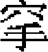

地理志五
江浙等處行中書省。領路二十二、府一、州二。屬州二十四，縣九十六。陸站一百八十處，水站八十二處。
江南浙西道肅政廉訪司
杭州路。上。宋杭州，屬浙西路。宋高宗南渡都之，爲臨安府。至元十三年，平宋，置兩浙大都督府，又置浙西宣慰司於臨安。未幾，罷大都督府，立行尚書省。十五年，改杭州路總管府。二十一年，徙江淮行省於杭州，改江浙行省。二十三年，復徙行省於揚州。二十六年，仍徙杭州。本路舊領錢塘、仁和、餘杭、臨安、新城、富陽、鹽官、於潛、昌化九縣。後升鹽官縣爲州。户三十六萬八百五十，口一百八十三萬四千七百一十。至元二十七年鈔籍。領司二：左、右録事司。宋遷都杭州，設九厢。元至元十四年，分爲四隅録事司。泰定二年，併爲左、右二司。元統二年，復立杭州四隅録事司。縣八：錢塘。上。仁和。上。與錢塘分治城内。餘杭。中。臨安。中。有青山務。新城。中。富陽，中。於潛，中。昌化。中。有

口巡檢司。州一：
海寧州。中。有硤石務。宋鹽官縣。元貞元年，升爲州。天曆二年，改海寧州。
湖州路。上。宋湖州，屬浙西路。至元十三年，升湖州路總管府。舊領烏程、武康、歸安、安吉、長興、德清六縣。後升長興縣爲州。户二十五萬四千三百四十五。鈔籍闕，用至順錢糧數。領司一：録事司。舊設東西南北四厢。至元十三年，立總督四厢。十四年，改録事司。縣五：烏程。上。歸安。上。與烏程皆爲倚郭。安吉。中。德清。中。武康。中。
州一：
長興州。中。宋故縣。元貞元年，升爲州。
嘉興路。上。宋嘉興府，屬浙西路。至元十四年，升嘉興路總管府。舊領嘉興、海鹽、華亭、崇德四縣。後升華亭縣爲府，升海鹽、崇德縣爲州。户四十二萬六千六百五十六，口二百二十四萬五千七百四十二。領司一：録事司。舊置厢官。至元十四年，改録事司。縣一：嘉興。上。倚郭。有風涇白牛務、魏塘務。
州二：
海鹽州。中。有澉浦務。宋海鹽縣。元貞元年，升爲州。
崇德州。中。宋崇德縣。元貞元年，升爲州。
平江路。上。宋平江府，屬浙西路。至元十三年，升平江路總管府。二十一年，徙浙西宣慰司於本路。舊領吴、長洲、崑山、常熟、吴江、嘉定六縣。後升崑山、常熟、吴江、嘉定俱爲州。户四十六萬六千一百五十八，口二百四十三萬三千七百。領司一：録事司。縣二：吴縣。上。倚郭。長洲。上。倚郭。
州四：
崑山州。中。宋崑山縣。元貞元年，升爲州。皇慶二年，徙州治於太倉。
常熟州。中。宋常熟縣。元貞元年，升爲州。
吴江州。中。宋吴江縣。元貞元年，升爲州。
嘉定州。中。宋嘉定縣。元貞元年，升爲州。
常州路。上。宋常州，屬浙西路。至元十四年，升常州路總管府。舊領晉陵、武進、無錫、宜興四縣。後升宜興縣爲府，無錫縣爲州。户二十萬九千七百三十，口一百二萬一十一。領司一：録事司。縣二：晉陵。中。倚郭。武進。中。倚郭。
州二：
宜興州。中。宋宜興縣。至元十五年，升宜興府。二十年，仍爲縣。二十一年，復升爲府，仍置宜興縣隸之。元貞元年。降爲州，省宜興縣入本州。
無錫州。中。宋無錫縣。元貞元年，升爲州。
鎮江路。下。宋鎮江府，屬浙西路。至元十三年，升鎮江路總管府。户十萬三千三百一十五，口六十二萬三千六百四十四。領司一：録事司。縣三：丹徒。中。倚郭。丹陽。中。金壇。中。
建德路。上。宋建德府，屬浙西路。至元十三年，置建德府安撫司。十四年，改建德路總管府。户十萬三千四百八十一，口五十萬四千二百六十四。領司一：録事司。縣六：建德。中。倚郭。有神泉監，宋置以鑄銅錢，後廢。元復置，後又廢。淳安。中。遂安。下。桐廬。中。分水。中。壽昌。中。有西隖寨。
松江府。宋華亭縣，爲嘉興府屬縣。至元十四年，升爲華亭府，仍隸嘉興路。十五年，改松江府，直隸行省。户十六萬三千九百三十一。至順錢糧數。領縣二：華亭。上。倚郭。至元十五年置。上海。上。本華亭縣地，名華亭海，宋時商販雲集，又曰上海市。至元二十八年，置上海縣。
江陰州。上。宋江陰軍，屬浙西路。至元十二年，依舊置軍，行安撫司事。十四年，升爲江陰路總管府。二十八年，降爲州，隸常州路。後直隸行省。舊領江陰一縣，省入本州。户五萬三千八百二十，口三十萬一百七十七。
浙東道宣慰司都元帥府舊治婺州。大德六年，移治慶元。
慶元路。上。宋慶元府，屬浙東路。至元十三年，置宣慰司。明年，改爲慶元路總管府。至治三年，復慶元路，未知何時省罷。舊領鄞、慈溪、奉化、象山、定海、昌國六縣。後奉化、昌國二縣俱升爲州。户二十四萬一千四百五十七，口五十一萬一千一百五十三。領司一：録事司。縣四：鄞縣。上。倚郭。有小溪鎮巡檢司，本唐之光溪鎮。象山。中。慈溪。中。定海。中。
州二：
奉化州。下。宋奉化縣。元貞元年，升爲奉化州。
昌國州。下。宋改唐翁山縣爲昌國縣。至元十四年，升爲州，仍置昌國縣隸之，後省縣入本州。
衢州路。上。宋衢州，屬浙東路。至元十三年，升衢州路總管府。户十萬八千五百六十七，口五十四萬三千六百六十。領司一：録事司。縣五：西安。中。倚郭。龍游。上。有陳村營，至元中立。江山。下。宋改禮賢縣。元初，復舊名。有任山營，在仙霞關。常山。下。宋改唐常山縣爲信安。元仍復舊名。有草萍營，至元二十一年立。開化。中。
浙東海右道肅政廉訪司
婺州路。上。宋婺州，屬浙東路。至元十三年，升婺州路總管府。舊領金華、東陽、義烏、蘭溪、永康、武義、浦江七縣。後升蘭溪縣爲州。户二十二萬一千一百一十八，口一百七萬七千五百四十。領司一：録事司。縣六：金華。上。倚郭。東陽。上。義烏。上。永康。中。武義。中。浦江。中。
州一：
蘭溪州。宋蘭溪縣。元貞元年，升爲州。
紹興路。上。宋紹興府，屬浙東路。至元十三年，改紹興路總管府。至正十六年，移江南行御史臺治紹興。舊領會稽、山陰、嵊、諸暨、上虞、餘姚、蕭山、新昌八縣。後升餘姚、諸暨二縣爲州。户一十五萬一千二百三十四，口五十二萬一千五百八十八。領司一：録事司。縣六：山陰。上。倚郭。會稽。中。倚郭。上虞。上。蕭山。中。嵊縣。上。宋改剡縣爲嵊縣，取四山爲嵊之義。新昌。中。宋以楓橋鎮置義安縣，又改新昌。
州二：
餘姚州。下。宋餘姚縣。元貞元年，升爲州。
諸暨州。下。宋諸暨縣。元貞元年，升爲州。
温州路。上。宋温州，又升瑞安府，屬浙東路。至元十三年，置温州路總管府。舊領永嘉、瑞安、樂清、平陽四縣。後升瑞安、平陽二縣爲州。户十八萬七千四百三，口四十九萬七千八百四十八。領司一：録事司。縣二：永嘉。上。倚郭。樂清。下。
州二：
瑞安州，下。宋瑞安縣。元貞元年。升爲州。
平陽州，下。宋平陽縣。元貞元年，升爲州。
台州路，上。宋台州，屬浙東路。至元十三年，置安撫司。十四年，改台州路總管府。舊領臨海、黄巖、天台、仙居、寧海五縣。後升黄巖縣爲州。户十九萬六千四百一十三，口一百萬三千八百三十三。領司一：録事司。縣四：臨海。上。倚郭。仙居。上。寧海。上。天台。中。
州一：
黄巖州。下。宋黄巖縣。元貞元年，升爲州。
處州路。上。宋處州，屬浙東路。至元十三年，升處州路總管府。户十三萬二千七百五十四，口四十九萬三千二百九十二。領司一：録事司。縣七：麗水。中。倚郭。龍泉。中。有山寨。松陽。中。遂昌。中。青田。中。 雲。中。慶元。中。
雲。中。慶元。中。
江東建康道肅政廉訪司大德八年，徙治寧國。
寧國路。上。宋寧國府，屬江南東路。至元十四年，升寧國路總管府。户二十三萬二千五百三十八，口一百一十六萬二千六百九十。領司一：録事司。舊立四厢。至元十四年，改録事司。縣六：宣城。上。倚郭。南陵。中。涇縣。中。寧國。中。旌德。中。太平。中。
徽州路。上。宋徽州，屬江南東路。至元十四年，升徽州路總管府。舊領歙、休寧、績溪、黟、祁門、婺源六縣。後升婺源縣爲州。户一十五萬七千四百七十一，口八十二萬四千三百四。領司一：録事司。舊設四厢。至元十四年，改置録事司。二十九年，罷。縣五：歙縣。上。倚郭。休寧。中。有五城務。祁門。中。黟縣。下。績溪。下。有西阬寨，置鎮守營。
州一：
婺源州。下。宋婺源縣。元貞元年，升爲州。惠洽鄉有巡檢司。
饒州路。上。宋饒州，屬江南東路。至元十四年，升饒州路總管府。十九年，改隸隆興行省。舊領鄱陽、餘干、浮梁、樂平、德興、安仁六縣。後升樂平、浮梁、餘干三縣俱爲州。户六十八萬二百三十五，口四百三萬六千五百七十。領司一：録事司。舊設三厢，至元四年改置。縣三：鄱陽。上。倚郭。德興。上。安仁。中。
州三：
餘干州。中。宋餘干縣。元貞元年，升爲州。
浮梁州。中。宋浮梁縣。元貞元年，升爲州。
樂平州。中。宋樂平縣。元貞元年，升爲州。
江南諸道行御史臺
集慶路。上。宋江寧府，又改建康府，屬江南東路。至元十四年，改建康路。十五年，立江淮行中書省，後徙於杭州，改江浙行省。二十三年，徙江南行御史臺於建康。天曆二年，以文宗潛邸，改建康路爲集慶路。舊領上元、江寧、溧陽、溧水、句容，後升溧水、溧陽二縣俱爲州。户二十一萬四千五百三十八，口一百七萬二千六百九十。領司一：録事司。縣三：上元。中。倚郭。江寧。中。倚郭。句容。中。
州二：
溧水州。中。宋溧水縣。元貞元年，升爲州。
溧陽州。中。宋溧陽縣。至元十四年，改爲溧州。十五年，升溧州府。十六年，改溧陽路，領録事司並溧陽縣。二十八年，罷路，止存溧陽縣。元貞元年，升爲州。
太平路。下。宋太平府，屬江南東路。至元十四年，升爲太平路總管府。户七萬六千二百二，口四十四萬六千三百七十一。領司一：録事司。舊設四厢。至元十四年，改置。縣三：當塗。中。倚郭。蕪湖，中。繁昌。下。
池州路。下。宋池州，屬江南東路。至元十四年，升池州路總管府。户六萬八千五百四十七，口三十六萬六千五百六十七。領司一：録事司。縣六：貴池。下。倚郭。青陽。下。建德。下。銅陵。下。石埭。中。東流。下。
信州路。上。宋信州，屬江南東路。至元十四年，升爲信州路總管府。舊領上饒、玉山、弋陽、貴溪、鉛山、永豐六縣。後升鉛山縣爲州，直隸行省。户四十三萬二千二百九十，口六十六萬二千二百一十八。領司一：録事司。縣五：上饒。中。倚郭。玉山。中。弋陽。中。有寶豐場，宋之舊縣，後裁。元置榷場。貴溪。中。永豐。中。
廣德路。下。宋廣德軍，屬江南東路。至元十四年，升爲廣德路總管府。户五萬六千五百一十三［一］，口三十三萬九千七百八十。領司一：録事司。至元二十八年罷。縣二：廣德。中。倚郭。建平。中。
鉛山州。宋鉛山縣，屬信州。至元二十九年，升爲州，直隸行省，割上饒縣之乾元、永樂二鄉，弋陽之新政、善政二鄉來屬。户二萬六千三十五，口闕。
福建等處行中書省。領路八、屬州二、屬縣四十六。
福建閩海道肅政廉訪司
福州路。上。宋福州，屬福建路。至元十五年，改爲福州路總管府。十七年，置福建行省於本路。是年，徙於泉州。十八年，復徙於本路。十九年，又回泉州。二十二年，罷行省，置福建道宣慰司。後罷宣慰司，復立行省於本州。大德二年，又置宣慰司都元帥府，罷行省，隸江浙行省。至正十六年，復置福建等處行中書省。本路舊領閩、侯官、福清、連江、古田、永泰、長溪、永正、閩清、寧德、懷安、長樂、福安十三縣。後升長溪縣爲福寧州，析寧德、福安隸之，又升福清縣爲州。户七十九萬九千六百九十四，口三百八十七萬五千一百二十七。領司一：録事司。至元十五年，行中書省於府城十二厢，分四隅，置録事司。十六年，併其二，置東西二司。二十年，復併爲一。縣九：閩縣。中。倚郭。侯官。中。倚郭。懷安。中。古田。上。閩清。中。長樂。中。連江。中。羅源。中。永福。中。
州二：
福清州。下。宋福清縣。元貞元年，升爲州。
福寧州。上。宋長溪縣。至元二十三年，升爲州。領縣二：寧德。中。福安。中。
建寧路。下。宋建寧府，屬福建路。至元十六年，改建寧路總管府。户一十二萬七千二百五十四，口五十萬六千九百二十六。領司一：録事司。縣七：建安。中。倚郭。甌寧。中。倚郭。浦城。中。建陽。中。宋建陽縣，又改嘉禾。元復舊名。崇安。中。松溪。下。政和。下。
泉州路。上。宋泉州，屬福建路。至元十四年，置行宣慰司，兼行征南元帥府事。十七年，改爲行中書省，置泉州路總管府。是年，又徙泉州行省於隆興。大德元年，以福建平海等處行中書省治泉州，後罷。户八萬九千六十，口四十五萬五千五百四十五。領司一：録事司。至元十五年。置南北二司。十六年，併爲一。縣七：晉江。中。倚郭。南安。中。惠安。下。同安。下。永春。下。安溪。下。德化。下。
興化路。下。宋太平軍，尋改興化軍，屬福建路。至元十四年，升興化路總管府。户六萬七千七百三十九，口三十五萬二千五百三十四。領司一：録事司。縣三：莆田。中。倚郭。至元十一年，割左右兩厢屬録事司。仙游。下。興化。下。宋析莆田縣地置興化，移軍治於此縣。後復徙治莆田。
邵武路。下。宋邵武軍，屬福建路。至元十三年，升爲邵武路總管府。户六萬四千一百二十七，口二十四萬八千七百六十一。領司一：録事司。縣四：邵武。中。倚郭。光澤。中。泰寧。中。建寧。中。
延平路。下。宋南劍州，屬福建路。至元十五年，升爲南劍路總管府。延祐元年，改南劍路爲延平路。户八萬九千八百二十五，口四十三萬五千八百六十九。領司一：録事司。縣五：南平。中。倚郭。宋劍浦縣。延祐元年，改爲南平。尤溪。中。沙縣。中。順昌。中。將樂。中。
汀州路。下。宋汀州，屬福建路。至元十五年，升爲汀州路總管府。户四萬一千四百二十三，口二十三萬八千一百二十七。領司一：録事司。縣六：長汀。中。倚郭。寧化。中。清流。下。宋舊縣，紹定中廢。至元中，復置。連城。下。宋蓮城。至元中，改爲連城。上杭。下。武平。下。
漳州路。下。宋漳州，屬福建路。至元十八年，升爲漳州路總管府。舊領龍溪、漳浦、龍巖、長泰四縣。至治間，以龍溪、漳浦、龍巖三縣地僻遠難治，析其地置南勝縣，後改南靖。户二萬一千六百九十五，口十萬一千三百六。屯田一百五十頃。領司一：録事司。縣五：龍溪。下。倚郭。漳浦。下。龍巖。下。長泰。下。南靖。下。
江西等處行中書省，領路十、州，屬州十三，屬縣七十六。
江西湖東道肅政廉訪司
龍興路。上。宋隆興府，屬江南西路。至元十二年，置行都元帥府及安撫司。十四年，改元帥府爲江西道宣慰司，本路爲總管府，置行中書省。十五年六月，併隆興省於福建，其宣慰司，除額設員數外，餘並罷去。七月，復以塔出等行中書省於贛州。十六年，移贛州行省還隆興。十七年，又併泉州行省於隆興。十九年，併江西、福建行省爲一，罷宣慰司，隸皇太子位。十一月，以袁州、饒州、興國軍復隸隆興省。二十一年，改隆興路爲龍興路。二十七年，移行省於吉州，後復還本路。舊領南昌、新建、奉新、豐城、分寧、靖安、武寧、進賢八縣。後升豐城縣爲富州，析武寧、分寧二縣隸寧州，又以武寧還隸本路。户三十七萬一千四百三十六，口一百四十八萬五千七百四十四。至元二十七年鈔數。領司一：録事司。宋分置九厢。至元十三年廢城内六厢，置録事司。縣六：南昌。上。倚郭。至元二十年，割録事司所領城外二厢、東西兩關來屬。新建。上。倚郭。進賢。中。奉新。中。靖州。中。武寧。中。至元二十三年，置寧州，領武寧、分寧二縣。大德五年，改武寧縣，隸本路。
州二：
富州。上。宋豐城縣，隸隆興府。至元二十三年，升爲州。
寧州。中。至元二十三年，於武寧縣置寧州，武寧爲倚郭縣。大德八年，析武寧直隸本路，徙州治於分寧。領縣一：分寧。宋屬隆興府。至元二十三年，改隸寧州。
吉安路。上。宋吉州，屬江南西路。至元十四年，升吉州路總管府。皇慶元年，改爲吉安路。舊領廬陵、吉水、安福、太和、龍泉、永新、永豐八縣。後升吉水、安福、太和、永新四縣俱爲州。至順間，又析永新州地置永寧縣。户四十四萬四千八十三，口二百二十二萬四百一十五。領司一：録事司。縣五：廬陵。上。倚郭。永豐。上。萬安。中。龍泉。中。永寧。下。本永新縣地，至順間，分置永寧縣。
州四：
吉水州。中。宋吉水縣。元貞元年，升爲州。
安福州。中。宋安福縣。元貞元年，升爲州。
太和州。下。宋太和縣。元貞元年，升爲州。
永新州。下。宋永新縣。元貞元年，升爲州。
瑞州路。上。宋瑞州，屬江南西路。至元十四年，升瑞州路。舊領高安、上高、新昌三縣。後升新昌縣爲州。户十四萬四千五百七十二，口七十二萬二千三百二。領司一：録事司。至元十四年置。縣二：高安。上。倚郭。上高。中。至正九年，罷本縣長官司。
州一：
新昌州。下。宋太平興國六年，析高安縣地置新昌縣。元貞元年，升爲州。
袁州路。上。宋袁州，屬江南西路。至元十三年，置安撫司。十四年，改總管府，隸湖南行省。十九年，改隸江西行省。舊領宜春、分宜、萍鄉、萬載四縣。後升萍鄉縣爲州。户十九萬八千五百六十三，口九十九萬二千八百一十五。領司一：録事司。至元十三年，置兵馬司。十四年，改録事司。縣三：宜春。上。倚郭。分宜。上。萬載。中。
州一：
萍鄉州。中。宋萍鄉縣。元貞元年，升爲州。
臨江路。上。宋臨江軍，屬江南西路。至元十三年，隸江西行都元帥府。十四年，升臨江路總管府。舊領清江、新淦、新喻三縣。後升新淦、新喻二縣爲州。户十五萬八千三百四十八，口七十九萬一千七百四十。領司一：録事司。宋隸都監司。至元十三年，置兵馬司。十五年改。縣一：清江。上。倚郭。
州二：
新淦州。中。宋新淦縣。元貞元年，升爲州。
新喻州。中。宋新喻縣。元貞元年，升爲州。
撫州路。上。宋撫州，屬江南西路。至元十四年，升撫州路總管府。户二十一萬八千四百五十五，口一百九萬二千二百七十五。領司一：録事司。至元十四年，廢宋三厢立。縣五：臨川。上。崇仁。上。金溪。上。宜黄。中。樂安。中。
江州路。下。宋江州，屬江南西路。至元十二年，置江東西宣撫司，治江州。十三年。改爲江西大都督府，隸揚州行省。十四年，罷都督府，置江州路總管府，隸龍興行都元帥府。後置行中書省，本路直隸焉。十六年，改隸黄蘄等路宣撫司。二十二年，復隸行省。至正十六年，又改爲宣慰司都元帥府。户八萬三千九百七十七，口五十萬三千八百五十二。領司一：録事司。宋都監司。至元十二年，立兵馬司。十四年改。縣五：德化。中。瑞昌。中。彭澤。中。湖口。中。德安。中。
南康路。下。宋南康軍，屬江南東路。至元十四年，升南康總管，隸江淮行省。二十二年，改隸江西行省。舊領星子、都昌、建昌三縣。後升建昌縣爲州。户九萬五千六百七十八，口四十七萬八千三百九十。領司一：録事司。縣二：星子。下。本路治所。都昌。下。
州一：
建昌州。下。宋建昌縣。元貞元年，升爲州。
贛州路。上。宋贛州，屬江南西路。至元十四年。升贛州路總管府。舊領贛、安遠、雩都、虔化、信豐、龍南、瑞金、興國、會昌、石城十縣。後升虔化縣爲寧都州，析龍南、安遠二縣隸之。升會昌縣爲州，析瑞金縣隸之。户七萬一千二百八十七，口二十八萬五千一百四十八。領司一：録事司。至元十五年立。縣五：贛縣。上。州治所。興國。中。信豐。下。雩都。下。石城。下。元貞元年，以石城隸寧都，其復隸贛州，年分闕。
州二：
寧都州。下。宋虔化縣，後改寧都縣。元貞元年，升爲州。領縣二：龍南。下。以縣在龍灘之南，故名。至元二十四年，併入信豐縣。至大二年，復置。安遠。下。至元二十四年，併入會昌縣。至大二年，復置。
會昌州。下。宋會昌縣。元貞元年，升爲州。舊《志》：大德元年升寧都、會昌爲州，並隸贛州路。大德乃元貞之誤。
建昌路。下。宋建昌軍，屬江南西路。至元十四年，升爲建昌路總管府。舊領南城、南豐、新城、廣昌四縣。後升南豐縣爲州，直隸行省。户九萬二千二百二十三，口五十萬三千三十八。領司一：録事司。至元十四年，割南城置録事司。縣三：南城。中。新城。中。廣昌。中。
南安路。下。宋南安軍，屬江南西路。至元十四年，升南安總管府。十五年，析大庾縣城之四坊，置録事司。十六年，廢。户五萬六百一十二，口三十萬三千六百六十六。領縣三：
大庾。中。倚郭。南康。中。上猶。下。宋上猶縣，又改南安。至元十六年，改永清。後復爲上猶。
南豐州。下。宋南豐縣，隸建昌軍。至元十九年，升爲州，直隸江西行省。户二萬五千七十八，口一十二萬八千九百。
廣東道宣慰使司都元帥府［二］至元十五年置。
海北廣東道肅政廉訪司至元三十年，治廣州。
廣州路。上。宋廣州，屬廣南東路。至元十三年，内附。十五年，置廣州路總管府。三十年，升爲上路。舊領南海、番禺、增城、懷集、清遠、東莞、新會、香山八縣，後懷集析屬賀州。户十七萬二百一十六。口一百二萬一千二百九十六。領司一：録事司。至元十六年置，以州之東城、西城、子城並番禺、南海二縣在城民户隸之。縣七：南海。中。倚郭。番禺。下。倚郭。東莞。中。增城。中。香山。下。新會。下。清遠。下。宋清縣，元改清遠。
韶州路。下。宋韶州，屬廣南東路。至元十三年，内附。十五年，置韶州路總管府。分曲江縣城西厢地及城外三厢置録事司。二十九年，罷録事司。三十年，分贛州行院官一員。舊領曲江、樂昌、翁源、仁化、乳源五縣。翁源析屬英德州。户一萬九千五百八十四，口一十七萬六千二百五十六。領縣四：曲江。中。延祐五年，併翁源縣入之。樂昌。下。仁化。下。乳源。下。
惠州路。下。宋惠州，屬廣南東路。至元十六年，升惠州路總管府，置録事司，至元二十九年，罷録事司。户一萬九千八百三，口九萬九千一十五。領縣四：歸善。下。倚郭。博羅。下。海豐。下。河源。下。
南雄路。下。宋南雄州，屬廣南東路。至元十五年，升南雄路總管府，置録事司。二十九年，罷録事司。户一萬七百九十二，口五萬三千九百六十。領縣二：保昌。下。倚郭。至元二十七年，降南雄州爲保昌縣。按保昌宋舊縣，非因降改，殆省本州入保昌也。其復爲南雄州，未知何時。始興。下。
潮州路。下。宋潮州，屬廣南東路。至元十六年，升潮州路總管府。二十三年，復以江西等處行院副使兼廣東道宣慰使司，鎮潮州。舊領梅州。延祐四年，以梅州隸廣東宣慰司。户六萬三千六百五十，口四十四萬五千五百五十。領司一：録事司。至元二十一年置。縣三：海陽。下。倚郭。潮陽。下。揭陽。下。
德慶路。下。宋德慶府，屬廣南東路。至元十四年，廣西宣慰司以兵收附，改隸廣西道。十七年，置德慶路總管府。二十九年，仍改隸廣東道。户一萬二千七百五，口三萬二千九百九十七。領縣二：端溪。下。倚郭。龍水。下。
肇慶路。下。宋肇慶府，屬廣南東路。至元十六年，廣西宣慰司收附，改隸廣西道。十七年，置爲下路總管府。二十九年，改隸廣東道。户三萬三千三百三十八，口五萬五千四百二十九。領縣二：高要。中。倚郭。四會。中。
英德州。下。宋英德府，屬廣南東路。至元十三年，收附。十五年，置英德路總管府。二十七年，罷總管府，併所屬真陽、浛光二縣爲英德州。《翰墨全書》：元管真陽、浛光二縣，今爲新民員州。大德四年，復升爲路，置真陽、浛光、翁源三縣。延祐元年，復降爲州，併真陽、浛光入之。領縣一：翁源。大德五年置。延祐元年，併入曲江。其復立年分闕。
梅州。下。宋故州，屬廣南東道。至元十六年，升梅州路總管府。二十三年，降爲州，屬潮州路。延祐四年，改爲散州，直隸宣慰司。户二千四百七十八，口一萬四千八百六十五。領縣一：程鄉。下。
南恩州。下。宋故州。至元十三年，升南恩總管府。十九年，降爲散州。户一萬九千三百七十三，口九萬六千八百六十五。領縣二：陽江。下。陽春。下。
封州。下。宋故州。至元十三年收附，明年復叛，廣西宣慰司定其亂，遂隸廣西道。十七年，置封州路總管府。二十九年，降爲散州。仍屬廣東道［二］。户二千七十七，口一萬七百四十二。領縣二：封州。下。開建。下。
新州。下。宋故州，屬廣南東路。至元十六年，升新州路。十九年，降爲散州。户一萬一千三百一十六，口六萬七千八百九十六。領縣一：新興。下。
桂陽州。下。宋桂陽縣，屬連州。至元十九年，升爲散州，析連州陽山縣來屬。爲蒙古 忽都忽郡王分地。舊隸湖南道宣慰司，後復隸廣東道。户六千三百五十六，口二萬五千六百五十五。領縣一：陽山。下。
忽都忽郡王分地。舊隸湖南道宣慰司，後復隸廣東道。户六千三百五十六，口二萬五千六百五十五。領縣一：陽山。下。
連州。下。宋故州，屬廣南東路。至元十三年，置安撫司，直隸行中書省。十七年，罷安撫司，升爲連州路，隸湖南道。二十九年，改隸廣東道。元貞元年，降散州。户四千一百五十四，口七千一百四十一。領縣一：連山。下。
循州。下。宋故州，屬廣南東路。至元十三年，升爲循州路。二十三年，降散州。户一千六百五十八，口八千二百九十。領縣三：龍川。下。興寧。下。長樂。下。
【校勘記】
［一］「户五萬六千五百一十三」，「户」字原脱，據《元史》卷六二志第十四《地理五》補。
［二］「廣東道」，「廣」字原脱，《元史》卷六二志第十四《地理五》同。據清嘉慶《大清一統志》卷四四七、道光《廣東通志》卷三等補。
本章完!